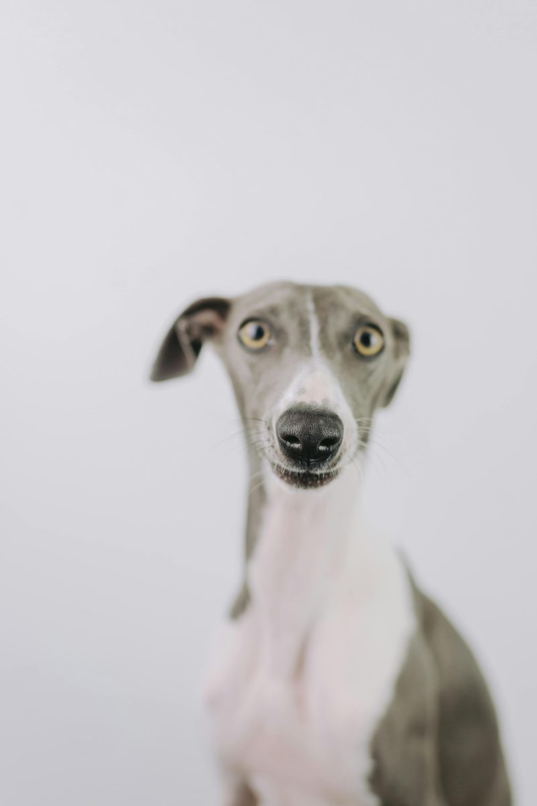

Greyhound
45 mph. Naps included. No brakes.

Don't let the racing heritage fool you — Greyhounds are among the gentlest dogs you'll ever meet. At home they're soft, quiet, and almost cat-like in their independence. They'll find a spot on the couch and stay there for hours without demanding attention or causing drama. That said, they feel deeply and form strong bonds with their people. They're sensitive dogs; raised voices and chaotic households stress them out more than most breeds.
Outside, the sighthound switch flips. Anything small and fast-moving becomes a target, and once that chase instinct fires there's very little recalling them. Inside the house, they're one of the calmest large breeds you'll find. It's a genuine split personality — electric on the field, serene on the sofa — and most Greyhound owners find it charming once they understand it.
Greyhounds typically live 10–14 years and are remarkably healthy compared to many large breeds. Two things every owner needs to know upfront: they metabolize anesthesia differently than other dogs due to their extremely low body fat percentage. Any vet treating your Greyhound should be aware of this — it's not a dealbreaker, it just requires a modified protocol. Make sure your vet knows before any procedure.
Their thin skin bruises easily and heals more slowly than you'd expect; minor scrapes can look alarming but usually aren't. Bloat is a real risk, especially in deep-chested dogs like this one. Osteosarcoma (bone cancer) appears at higher rates than in the general dog population, particularly in dogs over eight. Routine dental care matters more than with many breeds — racing dogs often arrive with significant tartar buildup.
High-quality protein should anchor a Greyhound's diet. Despite looking almost dangerously lean — visible spine, prominent hip bones — a healthy Greyhound is supposed to look that way. Don't overfeed trying to fill them out; an overweight Greyhound is actually a health risk, putting strain on a frame built for different proportions.
Feed two smaller meals rather than one large one to reduce bloat risk, and avoid heavy exercise in the hour before and after meals. Many retired racers arrive with very specific dietary habits from kennel life, including eating kibble they were trained on for years. Transitioning to a new food gradually — over 10–14 days — is worth the patience to avoid digestive upset.
Greyhounds do well in calm, patient households. They're gentle with older children who understand the dog's need for quiet time and personal space. Very young kids who grab, shriek, and move unpredictably can genuinely stress a Greyhound out — not aggressively, but they'll retreat and stay anxious. This is a dog that thrives on routine and low-key affection rather than rowdy play.
Small pets — cats, rabbits, guinea pigs, small dogs — are a real variable. Prey drive levels differ significantly dog to dog. Most adoption agencies do cat-testing before placement, and a dog that passes reliably is a genuine finding worth confirming. Two Greyhounds together is often the sweet spot: they entertain each other, sleep together, and don't require constant human interaction to feel content.
The couch potato reputation is real but incomplete. Greyhounds need two or three genuine off-leash sprint sessions per week in a safely enclosed area — a fenced yard, a dog park with a secure perimeter, or a purpose-built lure coursing field. Their recall in open space is essentially nonexistent once they've locked onto something. An invisible fence will not stop a running Greyhound. Physical fencing is non-negotiable.
Most Greyhounds available for adoption are retired racers, and organizations like REGAP and Greyhound Pets of America have decades of experience matching dogs to families. The adoption process is usually thorough and well-supported. If you want a big, elegant, low-drama dog who will sleep twelve hours and look regal doing it, this is one of the best-kept secrets in the dog world. They're not a fashionable breed right now — which means the people who have them tend to be genuinely committed to them.
How much exercise does a Greyhound need?
The Greyhound has moderate physical activity needs and low mental stimulation needs.
What size is a Greyhound?
The Greyhound is a large breed.
How much grooming does a Greyhound need?
The Greyhound has low grooming needs.
Is a Greyhound easy to train?
The Greyhound is independent-minded, which can make training more challenging.
Is the Greyhound a good choice for first-time owners?
The Greyhound is best suited to owners who already have some dog experience.
Is a Greyhound apartment-friendly?
The Greyhound can live in an apartment, as long as it gets enough daily exercise.
How long does a Greyhound live?
The Greyhound typically lives 10–14 years.
General references for further reading. For your own dog, always check with your veterinarian.